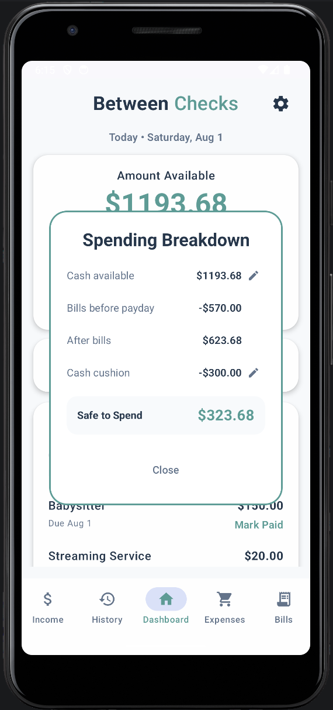
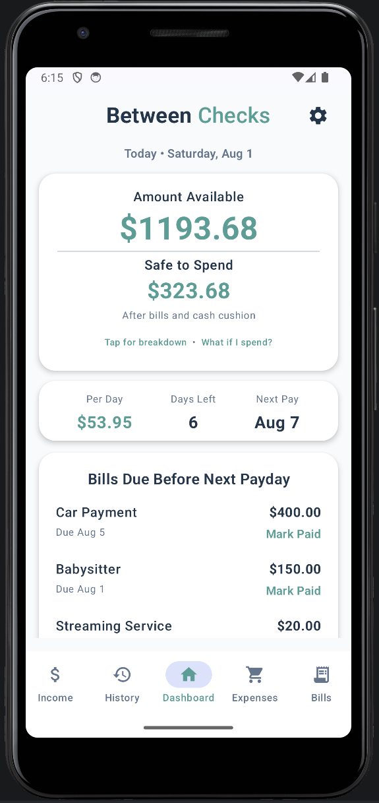
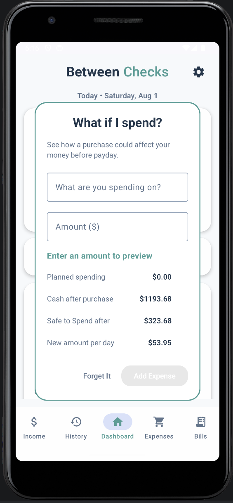
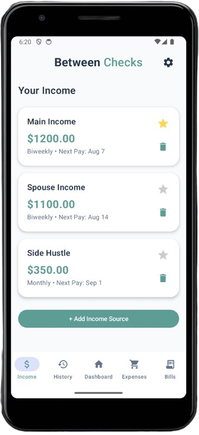
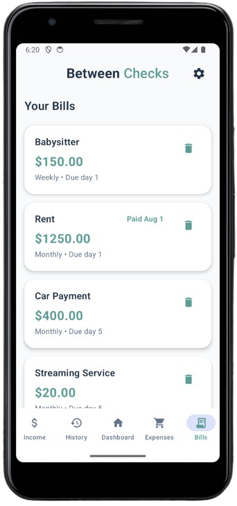
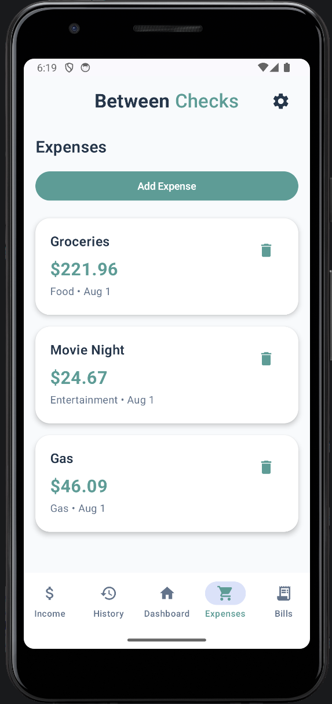
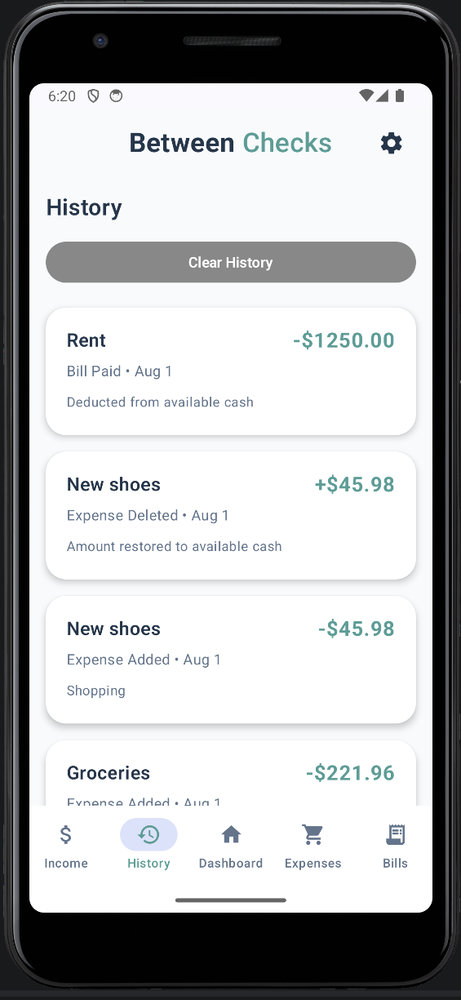

Spending Breakdown
See where Safe to Spend comes from.
Available cash, bills due before payday, and the optional cash cushion are shown separately instead of being buried inside a more complicated budget.
Apps
Practical mobile software designed around understandable features, local control, and minimal unnecessary data collection.
← Back to Studio Projects


A privacy-minded paycheck planning app built to answer one immediate question: what can I safely spend before I get paid again?
Between Checks keeps the core calculation visible so users can understand why the number changed instead of guessing.
Available cash, bills due before payday, and the optional cash cushion are shown separately instead of being buried inside a more complicated budget.
Test how a possible purchase would affect available cash, Safe to Spend, and the remaining daily amount before spending anything.
The app stays focused on the current pay period while giving users the controls needed to keep the numbers accurate.

Add multiple income sources and select the one that drives the pay-period calculation.

Track one-time and recurring bills and see which are due before payday.

Log everyday purchases manually without connecting a bank account.

Review income, expenses, bill payments, and balance changes over time.